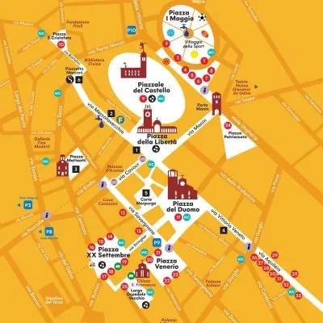

da gio 10 set a dom 13 set
Friuli DOC 2026
La festa del gusto nel centro di Udine: vini e specialità del Friuli Venezia Giulia, degustazioni, musica, laboratori e incontri culturali.
 Indicazioni
Indicazioni
- Costi e prenotazioni
- Costo non indicato · Prenotazione non indicata
- Programma
- Programma raccolto. Gli appuntamenti delle diverse schede sono riuniti in questa pagina.
- In caso di maltempo
- Nessuna indicazione specifica pubblicata.
- Note
- Le schede dei singoli appuntamenti sono state unite nella manifestazione principale.
L’EVENTO
Descrizione completa
Friuli DOC è l’occasione per scoprire, in un concentrato di emozioni, l’anima di un territorio autentico e fedele alla propria natura. Udine, la capitale del Friuli, è la sede naturale di questa grande festa e le osterie udinesi il cuore del suo spirito. Oltre ai vini friulani, al San Daniele, al Montasio, alla Gubana e a tutte le altre eccellenze friulane, Friuli DOC è anche un pretesto per visitare Udine, la città del Tiepolo, con i suoi scorci, i suoi palazzi ricchi di storia e il suo raffinato Castello.
Le linee 1, 2, 3, 7, 8, 9 e 10 cambieranno percorso in direzione stazione. Le linee C e la navetta per il Castello sono sospese.
Le linee 81 e 82 modificate in Piazzetta S.Cristoforo e Via Aquileia verranno istituite delle fermate temporanee per sostituire quelle soppresse.
La giornata inaugurale ti aspetta con grandi eventi e ospiti d’eccezione
Dal mattino fino a sera, gli stand di Friuli Doc ti aspettano per provare le eccellenze della Regione
Piazza Libertà ospita le tre serate musicali principali di Friuli DOC 2026. Il cartellone unisce pop, canzone italiana, rap ed elettronica con ingresso gratuito.
Venerdì sale sul palco Francesco Renga; sabato Fabio Rovazzi, preceduto da Angie e Chanel Dilecta; domenica chiude Dargen D’Amico. Tutti i concerti iniziano alle 21:00.
Le serate si svolgono nel centro storico durante Friuli DOC. Sono prevedibili affollamento, chiusure al traffico e controlli agli accessi: conviene raggiungere il centro con anticipo.
IL PROGRAMMA
Programma e orari
Le singole date appartengono alla stessa manifestazione. Ogni sede verificata dispone delle proprie indicazioni.
Programma completo della manifestazione
- Il calendario integrale è disponibile nella fonte ufficiale e può comprendere appuntamenti precedenti o successivi alle due settimane mostrate.
Da Venerdì 11 settembre a Domenica 13 settembre · Friuli DOC 2026 – concerti in Piazza Libertà
- 21:00 · Francesco Renga
- 21:00 · Angie e Chanel Dilecta
- A seguire · Fabio Rovazzi
- 21:00 · Dargen D’Amico
INFORMAZIONI UTILI
Prima di partire
- Controllare la fonte prima di partire.
ORGANIZZAZIONE